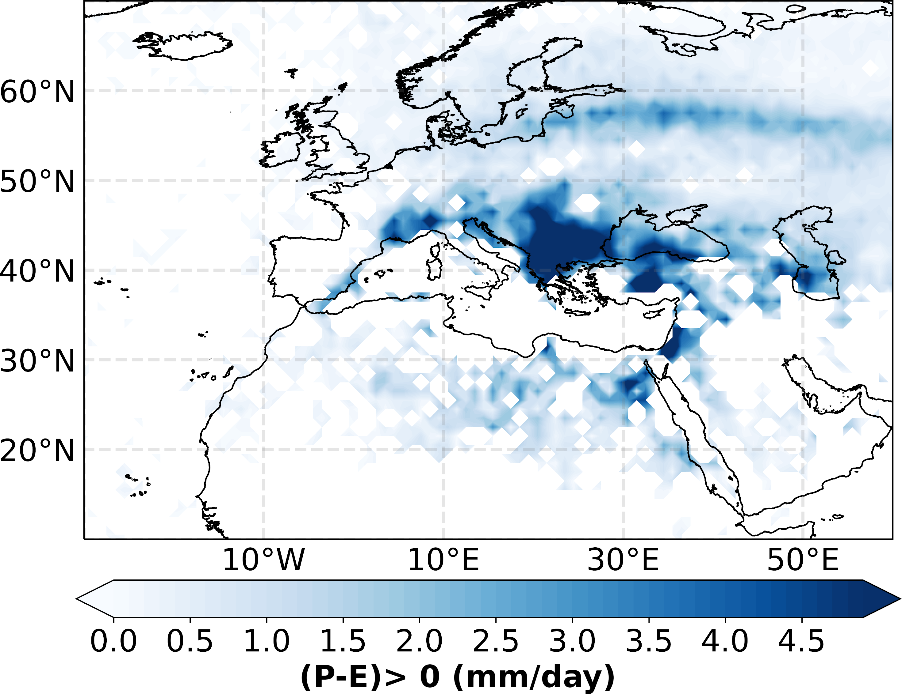

Illustrative examples
Firstly, the necessary data to be able to carry out tests with TROVA can be downloaded at the link: https://doi.org/10.5281/zenodo.10139577. Once you have downloaded the input data corresponding to FLEXPART forced with ERA-Interim, you can use the configuration files and masks available at https://github.com/tramo-ephyslab/TROVA/tree/main/Inputs and https://github.com/tramo-ephyslab/TROVA/tree/main/Masks respectively.These data are for tests on a certain day and using the methodology of Stohl and James (2005). The results for three days (review the configuration files that correspond to a specific day), either to determine moisture sources or sinks and analysis of sources by vertical layers are available at https://github.com/tramo-ephyslab/TROVA/tree/main/output. Check that once TROVA is installed you can reproduce these results.
NOTE: The files available in the zenodo repository are in .gz format, therefore you must verify the file_gz configuration parameter.
Climatological analysis
1- TROVA is used in backward in time to determine moisture sources.
In this case, it is the moisture source pattern associated with the Iberian Peninsula for the month of October 2001. In this analysis, TROVA is used with the methodology of Sodemann et al. (2008) and as input data the outputs of the FLEXPART-WRF model forced with the Community Earth System Model 2 (CESM2) climate model. The mask used is represented in red (the Iberian Peninsula itself).

2- TROVA is used in forward in time to determine the moisture sinks.
The following Figure presents the moisture sink pattern associated with the Mediterranean Sea for the month of October 2014. The methodology of Stohl and James (2005) is considered and how it masks the geographical limits of the Mediterranean Sea. The input data for TROVA are the outputs of FLEXPART forced with ERA-Interim.
{kind=link}